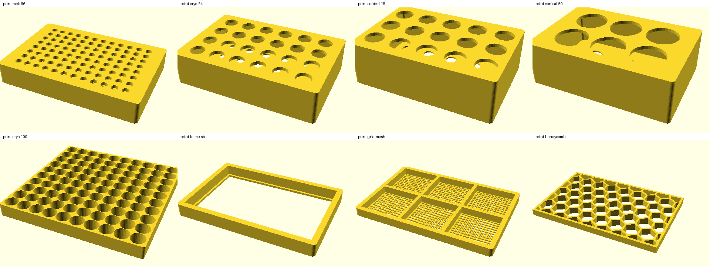

Baebugs · BioKEA specimen-to-evidence workcell
Explore the proposed path from specimen imaging and size filtering to plate handling and addressable evidence. The photographed bench establishes equipment presence, not a successful automated end-to-end run.
Find your protocol.
Build on what already exists.
Search Baebugs research workflows by purpose, equipment or evidence. Bookmark what matters, import your own method, and review a source-linked remix without sending commands to laboratory hardware.
Sample-to-evidence workflow DESIGN + SOURCE OBSERVATIONS
Built from BioKEA's five-module workflow and photographed bench inventory. Select a stage to see what is implemented, documented, or still unverified.
Digital lab twin · interactive software, not live robot telemetry
The bench model preserves preflight checks; the 3D viewer loads printable STL designs. Neither proves an actual specimen transfer or recovery.
A preserved virtual preflight failed: reach needed 316.7 mm, configured 300 mm. Rendered paths do not authorize real robot motion.
| Leaf | Module | Claim | Status |
|---|
Pick a row
The detail shows the leaf's address, its hashes, the licence that applies in this context, and buttons to check the hash yourself or contest it.
Toy and printed bugs
Parametric toys sized from museum data, not replicas. Each has an STL leaf.
| Family | Size | Tray | STL |
|---|
Species seen in the training photos
From GBIF museum photos (CC0 / CC BY). Median length from ruler-scaled photos.
| Species | Family | n | Length |
|---|
Lab parts
| Part | Module | Status | Leaf |
|---|
Opentrons labware
| Labware | Size (mm) | Leaf |
|---|
Built for the Opentrons Python API and labware schema (Apache-2.0). Bring your own: swap any part for yours and the graph compares by hash.
Printable labware remixes
Remixed from bench labware in the photos onto the SBS footprint (127.76 × 85.48 mm). Dimensions not set by a standard are photo estimates until checked with calipers. Tube racks, not tip racks; not for −80 °C or anything that spins.

| Remix | Size (mm) | Material | ≈ USD | Opentrons | Leaf |
|---|
3D lab
| Name | Where / when | Collection | Licence |
|---|
Live from the public GBIF occurrence API (stateProvince = California). Other California sources: Essig Museum, Calbug, iNaturalist California.
Check files you have
Pick files from your copy of the repo (or anything you built). Your browser hashes them; nothing is uploaded. Each one is matched to a leaf.
| File | Result |
|---|
Check your FCO / FCG
Paste JSON with {"leaves":[{"path":…,"sha256":…}]} (your own run or BYO graph). Each leaf is compared with this graph.
Contest
Every detail card has a Contest button. It opens a GitHub issue that carries the address and hash; attach your attestation from above. A contest is answered by recomputing the hashes, never by opinion.
| Object | Role | Size (mm) | Photos | Leaf |
|---|
Python CLI
pip install git+https://github.com/biobitworks/baebugs baebugs-graph get root baebugs-graph get leaf:LICENSE
npx (no install)
npx github:biobitworks/baebugs get root
MCP (Claude and others)
pip install "mcp>=1.2,<2" claude mcp add baebugs-graph -- \ python -m baebugs.graph_mcp
Raw JSON
mvp.json is the whole graph. Every surface reads the same file, so every surface returns the same root.